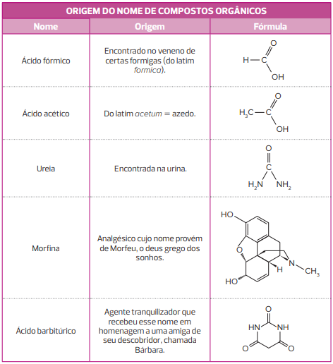
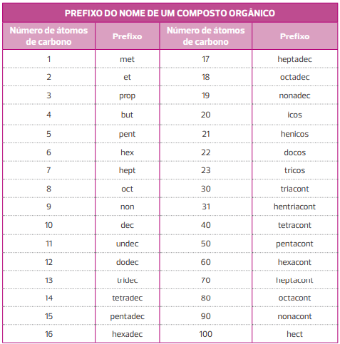
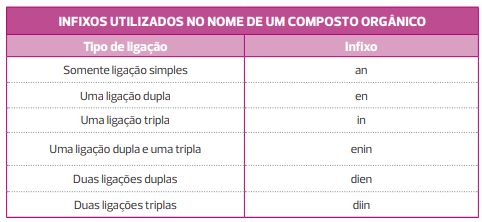
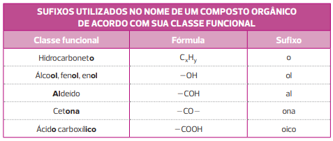
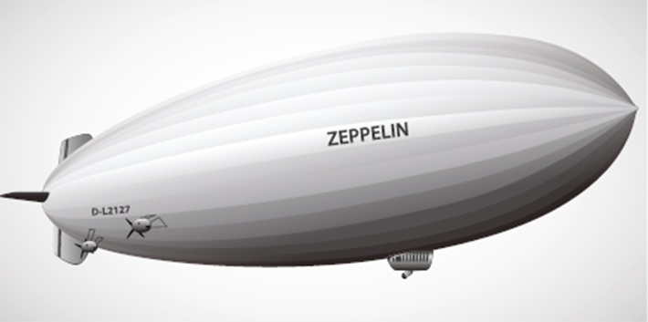
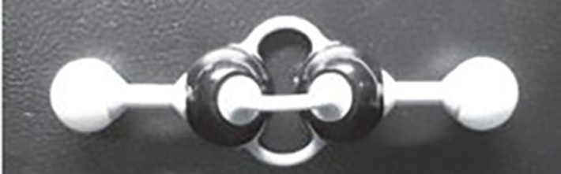

O metano (CH
4 ) é um hidrocarboneto gasoso, incolor, inodoro, pouco solúvel em água e inflamável. Ele pode ser produzido por diversas fontes, sendo as principais digestão de animais, decomposição de lixo orgânico, extração de
combustíveis minerais (sobretudo o petróleo), produção de combustíveis fósseis (gás e carvão), queima de combustíveis fósseis (veículos) e processos industriais.
É um dos principais gases que intensificam o aquecimento global; por isso, o aumento de sua eliminação na atmosfera tem chamado a atenção de diversos países e de muitas organizações de defesa do meio ambiente. No entanto, se produzido e coletado de forma
correta, pode ser uma excelente fonte de energia alternativa: a queima do metano pode gerar desde calor, usado como energia térmica, até energia elétrica. Quando produzido junto com outros gases por meio da decomposição anaeróbica
de matéria orgânica, ele recebe o nome de biogás.
Quando o petróleo é derramado no mar, podemos observar uma mistura heterogênea. Com base nessa observação, como ele é classificado quanto à polaridade?
Quais hidrocarbonetos estão presentes em seu cotidiano?
Neste capítulo serão abordadas as habilidades
EM13CNT106
,
EM13CNT201
,
EM13CNT206
,
EM13CNT307
e
EM13CNT309
.
Introdução
Os compostos orgânicos inicialmente receberam nomes não padronizados, os quais têm como base as propriedades e o local de obtenção de tais compostos ou, ainda, são uma forma de homenagear seus descobridores. Veja alguns exemplos
na tabela a seguir:

Com o desenvolvimento da Química Orgânica no século XIX, o número de compostos orgânicos conhecidos aumentou progressivamente, fazendo com que houvesse a necessidade de se criar um método sistemático para nomeá-los, uma vez que
a nomenclatura comum não ajuda a chegar à estrutura do composto. A primeira conferência para discutir e padronizar o nome dos compostos orgânicos foi promovida por August Kekulé em 1860. Desde então, cientistas vêm se reunindo
para aprimorar e atualizar a nomenclatura dos compostos orgânicos.
O sistema de nomenclatura que utilizamos foi desenvolvido pela União Internacional de Química Pura e Aplicada (IUPAC – do inglês International Union of Pure and Applied Chemistry), que surgiu em 1919, motivada principalmente
pela necessidade de padronizar as unidades de peso e medida.
Mais de um século após a primeira reunião da IUPAC, um composto orgânico pode, ainda, receber outros nomes, sendo os principais o nome trivial (usual, não sistemático) e o nome semitrivial (que tem apenas alguma parte que obedece às regras da IUPAC).
Neste livro, utilizaremos o nome IUPAC como referência, mas, sempre que julgarmos importante, também apresentaremos o nome usual dos compostos devido ao seu amplo uso e à sua aceitação.
Nomenclatura IUPAC (nomenclatura substitutiva)
A
nomenclatura sistemática (isto é, aquela que segue um sistema lógico) de um composto é aquela dada pela IUPAC, sendo conhecida também como nomenclatura substitutiva, uma vez que indica a substituição de um ou mais átomos
de hidrogênio ligados à cadeia principal por outro átomo ou grupo substituinte.
De acordo com essa regra, a nomenclatura de um composto orgânico se divide em três partes:
prefixo
+
infixo
+
sufixo
O
prefixo indica o número de átomos de carbono presentes na cadeia carbônica principal, que é aquela que apresenta a maior sequência de átomos de carbono, respeitando uma
ordem de prioridade :
grupo funcional
>
insaturação
>
radical
Estudaremos posteriormente cada um dos critérios de prioridade. Veja na tabela a seguir os prefixos utilizados.

O
infixo indica o tipo de ligação que existe entre os carbonos da cadeia. Veja os infixos na tabela a seguir:

Pode haver mais do que duas insaturações iguais. Nesses casos, usaremos os prefixos de quantidade da língua portuguesa, como tri (três), tetra (quatro), penta (cinco) etc.
O
sufixo indica a que função o composto orgânico pertence. Veja alguns exemplos na tabela a seguir.

Nosso estudo terá início pela classe dos hidrocarbonetos. Uma vez compreendida toda a base da nomenclatura dessa classe funcional, veremos detalhadamente as demais classes funcionais.
Hidrocarbonetos
São compostos formados exclusivamente por
carbono e
hidrogênio e representados pela fórmula geral
CxHy . Esses compostos são apolares em razão da baixa diferença de eletronegatividade entre os elementos químicos formadores (carbono e hidrogênio). Assim, apresentam forças intermoleculares do tipo
dipolo induzido-dipolo induzido.
Dois ou mais compostos podem ter uma mesma fórmula molecular e diferentes fórmulas estruturais que alteram propriedades físicas da molécula. Por exemplo, com a fórmula C
4 H
10 , podemos ter a molécula do butano e do metilpropano. O butano apresenta maior temperatura de ebulição, uma vez que sua cadeia é normal, e os carbonos se encontram mais afastados uns dos outros. Já o metilpropano
tem cadeia ramificada, e os átomos de carbono são mais próximos uns dos outros, o que facilita as interações intermoleculares – com isso, a temperatura de ebulição é menor.
Nomenclatura de hidrocarbonetos de cadeia normal aberta
Conforme estudamos no Capítulo 4, um hidrocarboneto de cadeia normal é aquele que apresenta uma única sequência de átomos de carbono. Para nomearmos um hidrocarboneto com esse tipo de cadeia, devemos seguir as regras de nomenclatura
da IUPAC:
Cadeia normal aberta saturada
Vamos analisar alguns exemplos e aplicar a regra de nomenclatura da IUPAC:
Todos esses exemplos são hidrocarbonetos, logo apresentam o sufixo o; apresentam ligações simples entre carbonos, portanto têm o infixo an; e contam com um, dois e três carbonos em suas cadeias, por isso apresentam os prefixos
met, et e prop respectivamente.
Mais
Camada de Ozônio, INPEvideos educ.
Quando pensamos em problemas ambientais, provavelmente nos vêm à cabeça o efeito estufa e a destruição da camada de ozônio. Esse vídeo trata do último exemplo.
Analisando alguns exemplos e aplicando a regra de nomenclatura da IUPAC, temos:
Nesses casos, temos exemplos de hidrocarbonetos (sufixo o) insaturados, que apresentam ligação dupla (infixo en) ou tripla (infixo in) entre carbonos. Quando nomeamos uma cadeia desse tipo, devemos indicar a posição da insaturação, isto é, precisamos
dizer em qual carbono da cadeia a insaturação se encontra,
começando a numeração pela extremidade da cadeia mais próxima da insaturação e terminando na outra extremidade . Porém, essa numeração se aplica às cadeias nas quais há mais de uma posição possível para a insaturação.
Questão resolvida
1
Vunesp O octano é um dos principais constituintes da gasolina, que é uma mistura de hidrocarbonetos. A fórmula molecular do octano é:
C
8 H
18
C
8 H
16
C
8 H
14
C12H
24
C
8 H
38
Resolução:
Alternativa: A
O octano é um hidrocarboneto (composto formado apenas de carbonos e hidrogênios) com 8 carbonos que realizam apenas ligações simples. Dessa maneira, sua fórmula estrutural pode ser representada da seguinte maneira:
Assim, o octano tem fórmula molecular C
8 H
18.
Nos exemplos anteriores, não indicamos a posição, pois ela só poderia estar no carbono 1 de cada cadeia, uma vez que a insaturação deve ter prioridade na numeração. Note que a insaturação se encontra entre o carbono 1 e o carbono
2, e devemos escolher sempre o menor número do par para indicar sua posição, uma vez que ele tem prioridade. Veja como ficaria a numeração e a nomenclatura para os mesmos compostos (lembrando que, nesses casos, a numeração
não é utilizada):
Na
nomenclatura de compostos orgânicos , os números são separados das letras por hífen, enquanto os números são separados de outros números por vírgula.
Como o eteno é formado por dois carbonos, a ligação dupla estará sempre no carbono 1, quer comecemos a numeração da cadeia pela extremidade esquerda ou pela direita; logo, não é necessário indicar sua posição. Já no caso do propeno,
que é formado por três carbonos, iniciamos a numeração da cadeia pela extremidade esquerda, pois na fórmula estrutural apresentada anteriormente a ligação dupla se encontra no carbono 1 (prioridade); se começássemos a numeração
pela extremidade direita, a ligação dupla se encontraria no carbono 2, de menor prioridade, sendo essa numeração incorreta para o composto. O mesmo ocorre com o propino: começamos a numeração pela extremidade direita, pois
a ligação tripla se encontra no carbono 1 (prioridade).
Ao montarmos a fórmula estrutural de um composto, podemos desenhá-la iniciando a insaturação da cadeia pela extremidade direita ou pela esquerda: o que vai mudar é o sentido da contagem dos carbonos. Veja a seguir as possíveis
fórmulas estruturais para o propino:
Existem dois hidrocarbonetos formados por quatro carbonos e uma ligação dupla: but-1-eno e but-2-eno. Nesses compostos, a ligação dupla deve ser indicada mesmo que em um deles ela esteja no carbono 1, uma vez que há mais de uma
posição possível para ela. Veja:
Para o but-1-eno representado anteriormente, devemos iniciar a numeração da cadeia pela extremidade esquerda (prioridade, a ligação dupla está no carbono 1); já para o but-2-eno, podemos começar a numeração por qualquer extremidade,
uma vez que a ligação dupla está no carbono 2 (menor número do par de carbonos 2 e 3) de qualquer maneira.
Cadeia normal insaturada com duas ou mais insaturações de tipos diferentes
Para compostos que apresentam ligação dupla e tripla, também seguimos a nomenclatura IUPAC, com prioridade de numeração à extremidade em que a insaturação aparecer primeiro e seguindo a ordem alfabética da insaturação no nome do
composto. Veja alguns exemplos:
Para o primeiro composto, um
hidrocarboneto que apresenta ligação dupla e tripla, devemos iniciar a numeração da cadeia pela extremidade com a insaturação no carbono mais baixo ; nesse caso, é a extremidade direita, pois há insaturações nos carbonos
1 e 3 (a soma das posições dos carbonos que apresentam insaturação seria igual a 4
=
1
+
3). Se começássemos pela extremidade esquerda, teríamos insaturações nos carbonos 2 e 4 (a soma das posições dos carbonos que apresentam insaturação seria igual a 6
=
2
+
4). O nome deve respeitar as três partes propostas pela IUPAC: prefixo
+
infixo
+
sufixo. Como há
dois infixos , usaremos a
ordem alfabética para eles . Assim, o nome correto será pent-3-en-1-ino. Retire os números e leia o nome da palavra para ver se ela tem boa sonoridade: pentenino.
Para o segundo composto, há
insaturações nos mesmos carbonos da cadeia, independentemente da extremidade pela qual iniciamos a numeração , que seriam os carbonos 1 e 3 da cadeia. Assim, a numeração respeita a ordem alfabética, com a ligação dupla
no valor mais baixo: but-1-en-3-ino. Retirando os números, teríamos butenino.
Cadeia normal aberta insaturada com duas ou mais insaturações do mesmo tipo
Para compostos com duas ou mais insaturações do mesmo tipo, devemos usar prefixos de quantidade, como
di (dois),
tri (três),
tetra (quatro) etc. Deve ser acrescentada a vogal de ligação “a” para melhorar a sonoridade da palavra. Veja o exemplo:
Ao retirarmos os números do nome do composto, teríamos a palavra pentdieno; logo, devemos acrescentar a vogal de ligação “a” para melhorar a sonoridade da palavra – pentadieno.
Nomenclatura de hidrocarbonetos de cadeia fechada normal
Todas as regras de nomenclatura que foram estudadas até agora também se aplicam às cadeias fechadas. No entanto, para diferenciá-las das cadeias abertas, devemos acrescentar o termo “ciclo” antes do prefixo ligado diretamente
ao nome da cadeia.
ciclo
+
prefixo
+
infixo
+
sufixo
Cadeia normal fechada saturada
Veja alguns exemplos:
Para cadeias com seis ou sete átomos de carbonos, a palavra ciclo deve ser separada do nome da cadeia principal por hífen ou deve ser escrito o nome da cadeia sem a letra “h”. Veja:
Cadeia normal fechada insaturada com uma insaturação
Para cadeias fechadas que apresentam uma única insaturação, não mencionamos sua posição, pois sempre estará no carbono 1, uma vez que a insaturação deve ter prioridade na numeração da cadeia. A numeração pode ocorrer no sentido
horário ou anti-horário. Veja:
A
ligação dupla sempre deve estar entre dois números consecutivos crescentes, como no primeiro exemplo a seguir (1 e 2); portanto, ela nunca deve aparecer entre 5 e 1. Veja:
Cadeia normal fechada insaturada com duas ou mais insaturações
Para cadeias fechadas que apresentam duas ou mais insaturações, devemos numerar a cadeia de modo que as insaturações fiquem nos carbonos mais baixos possíveis, pois devem ter prioridade. Veja:
Aplicando conhecimentos
1
Dê o nome IUPAC para os compostos a seguir:
2
Escreva a fórmula estrutural e dê o nome de todos os hidrocarbonetos de cadeia normal formados por dois átomos de carbono.
3
Por que o metano é conhecido como “gás do pântano”?
4
De acordo com a IUPAC, o composto prop-1-eno pode ser chamado apenas propeno? Justifique.
5
De acordo com a IUPAC, o composto but-1-eno pode ser chamado apenas buteno? Justifique.
6
Funrei-MG (Adapt.) A fórmula estrutural simplificada para um alceno é representada a seguir:
Esse alceno é o:
hept-2-eno
hex-2-eno
hexa-1,4-dieno
hexa-2,5-dieno
Consolidando saberes
1
O craqueamento é um processo químico que converte substâncias de determinada fração de menor interesse comercial em outras de uma fração mais rentável, baseando-se na quebra de moléculas longas de hidrocarbonetos com elevada
massa molar. A polimerização também é utilizada com obtenção de moléculas de combustíveis. Nesse processo, ocorre a combinação de moléculas menores, formando moléculas maiores. Em duas etapas de um processo de polimerização,
temos a formação do produto I e produto II, como demonstrado a seguir.
(Fonseca, M. R.
Química: ensino médio . 2. ed. São Paulo: Ática, 2016. Adaptado).
Etapa 1: 4 C
2 H
4 (g)
ñ
C
8 H
16 (
L
)
Produto I
Etapa 2: C
8 H
16 (
ℓ
)
+
H
2 (g)
C
8 H
18 (
ℓ
)
Produto II
Os produtos I e II, são respectivamente:
alcano e alceno.
alceno e alcano.
alcano e alcino.
alceno e alcino.
alcino e alcano.
2
Escreva todas as fórmulas estruturais planas de cadeia linear para a molécula do pentadieno. Dê o nome IUPAC para cada composto formado.
3
O butano é um hidrocarboneto gasoso, incolor e inodoro, que está presente no gás de cozinha, o gás liquefeito de petróleo (GLP). Historicamente, foi utilizado em dirigíveis do tipo zepelim, nome dado em homenagem ao pioneiro
no desenvolvimento desse tipo de dirigível rígido, o conde alemão Ferdinand von Zeppelin.

Assinale a alternativa correta com relação à fórmula química do butano:
C
4 H
4
C
4 H
10
C
2 H
6
C
3 H
9
C
4 H
9
4
O ciclobuteno pode ser escrito de quatro maneiras diferentes. Escreva suas fórmulas de linhas e explique por que não é necessário indicar a posição da insaturação.
5
Fatec-SP No modelo da foto a seguir, os átomos de carbono estão representados por esferas pretas e os de hidrogênio, por esferas brancas. As hastes representam ligações químicas covalentes, sendo que cada haste corresponde
ao compartilhamento de um par de elétrons.

O modelo em questão está, portanto, representando a molécula de:
etino.
eteno.
etano.
2-butino.
n-butano.
6
Uema GLP (Gás Liquefeito de Petróleo), também conhecido popularmente como gás de cozinha, é um combustível fóssil não renovável que pode se esgotar de um dia para o outro, caso não seja utilizado com planejamento
e sem excesso. Ele é composto, dentre outros gases, por propano (C
3 H
8 ), butano (C
4 H
10 ) e pequenas quantidades de propeno (C
3 H
6 ) e buteno (C
4 H
8 ). Esses compostos orgânicos são classificados como hidrocarbonetos que apresentam semelhanças e diferenças entre si.
Com base no tipo de ligação entre carbonos e na classificação da cadeia carbônica dos compostos acima, pode-se afirmar que:
os compostos insaturados são propano e butano.
os compostos insaturados são propeno e buteno.
os compostos insaturados são propeno e butano.
os compostos apresentam cadeias homocíclicas.
os compostos possuem cadeias heterocíclicas.
7
Unama-PA A substância que constitui o biogás é:
Monóxido de carbono
Metano
Álcool
Biodiesel
Superação
Uece 2019 Assinale a opção que completa correta e respectivamente o seguinte enunciado: “Muitas substâncias orgânicas têm em sua estrutura um ciclo formado por _____________
1 átomos de carbono com três ligações duplas _____________
2 .
Compostos que têm esse ciclo são chamados de _____________
3
”.